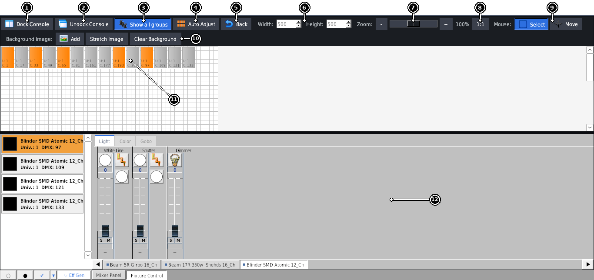

For: FullPlayer
The 2D View is a plan of the rig as you draw it: every fixture is a small box you can put where it hangs. Click the boxes to select fixtures - it is the same selection as in Fixture Control, which is shown under it - and set them. Open it with the 2D View tab of the top bar. It works as the 2D-Console of LumiDMX X1.

Andrei_edit after Show all groups and Auto Adjust; five fixtures selected (orange). The last one clicked, a Blinder, opened its group in Fixture Control.
| 1 | Dock Console - the console back in the tab. |
| 2 | Undock Console - the console in a window of its own (on a second screen, for example). |
| 3 | Show all groups - every fixture of the patch; not pressed, only the group open in Fixture Control. |
| 4 | Auto Adjust - puts the fixtures in order, side by side. |
| 5 | Back - right after Auto Adjust: the fixtures go back where they were. Grey when there is nothing to go back to. |
| 6 | Width / Height - the size of the console (the white area), in pixels. |
| 7 | Zoom - from 0 to 200 % (- and + step by step). |
| 8 | 1:1 - the zoom back to 100 %. |
| 9 | Mouse: Select - to work with the lights; Move - to arrange the console (see below). |
| 10 | Background Image: Add a picture under the fixtures (the plan of the stage, a photo of the truss), Stretch Image to the size of the console, Clear Background. |
| 11 | The fixtures: each a box with "U:" (its universe) and "C:" (its start address), and the picture of what Fixture Control set last. Selected: orange. |
| 12 | Fixture Control, for the fixtures selected. |
| click | Selects a fixture, or takes it out of the selection. Fixture Control opens the tab of its group. |
| drag on the empty console | A band: selects what it touches; what it leaves is unselected again. |
Then set the fixtures in Fixture Control: they move, change colour and so on, and the boxes show the picture of what was set.
| click | Marks a fixture to be moved (a blue dotted frame), or unmarks it. |
| drag on the empty console | A lasso: turns over the marks of all it touches (a second lasso over marked ones unmarks them). |
| drag a marked fixture | All the marked fixtures move together. |
| drag another fixture | Only that one moves. |
Move never changes the selection of the lights. Put the boxes as the fixtures hang, so that you find each one at a glance during the show.
The places of the fixtures, the size, the zoom and the background are kept in the project when you save it; the picture is copied into the project.